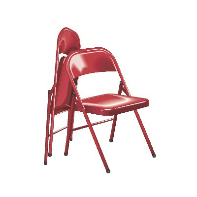

<!-- 유용한팁 -->
<!-- 이미지 N개 + 개별 엔트리를 가진 단어 -->
<!-- 아래 경계선 기본 -> 실선 -->
<!-- 위쪽 경계선 '점선' -> border_top_dotted 추가 -->
<div class="image_wrap">
    <span class="tag red" lang="en">Britannica Visual Dictionary</span>
    <div class="image_area">
        <a href="#">
            
            <p class="img_title">
                <strong>stacking chairs</strong>
                <span>스태킹 의자</span>
            </p>
        </a>
        <a href="#">
            
            <p class="img_title">
                <strong>folding chair</strong>
                <span>접이식 의자</span>
            </p>
        </a>
    </div>
    <div class="image_area">
        <a href="#">
            
            <p class="img_title">
                <strong>chaise longue</strong>
                <span>셰즈 롱그</span>
            </p>
        </a>
    </div>
    <em class="source">출처: © QA International2012.<a href="#">(www.ikonet.com)</a></em>
</div>

<div class="btn_wrap">
    <button type="button" class="btn_link_terms">지식백과 원문보기</button>
</div>